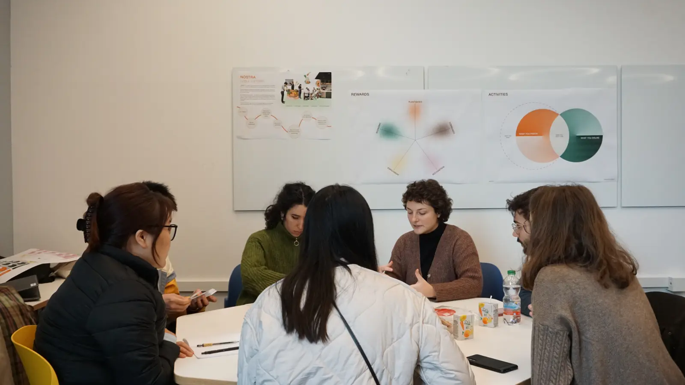
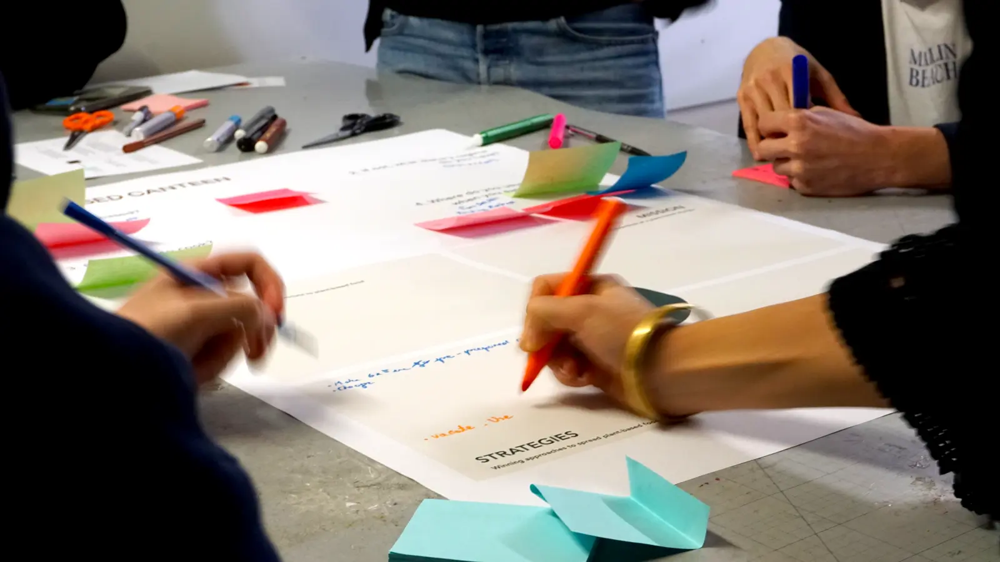
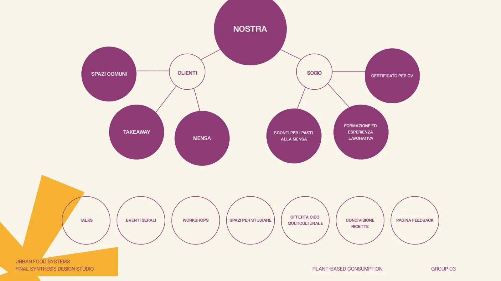
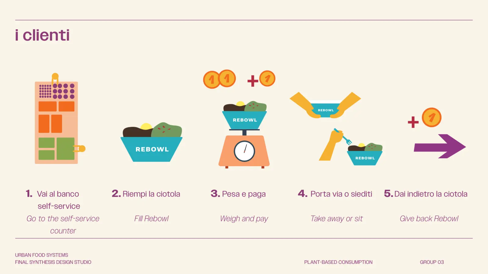
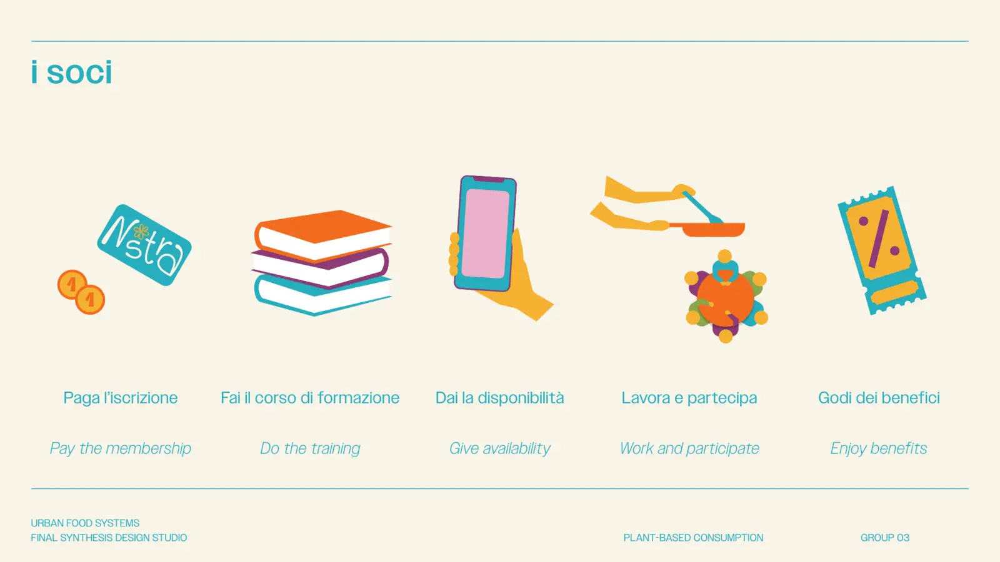
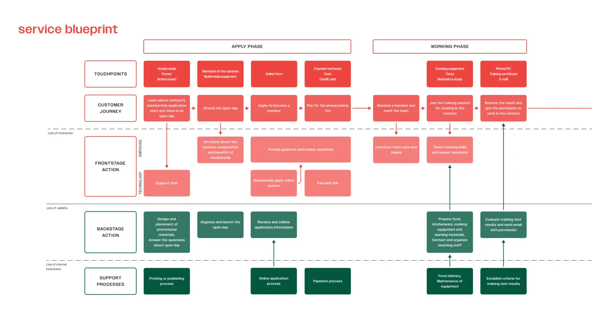
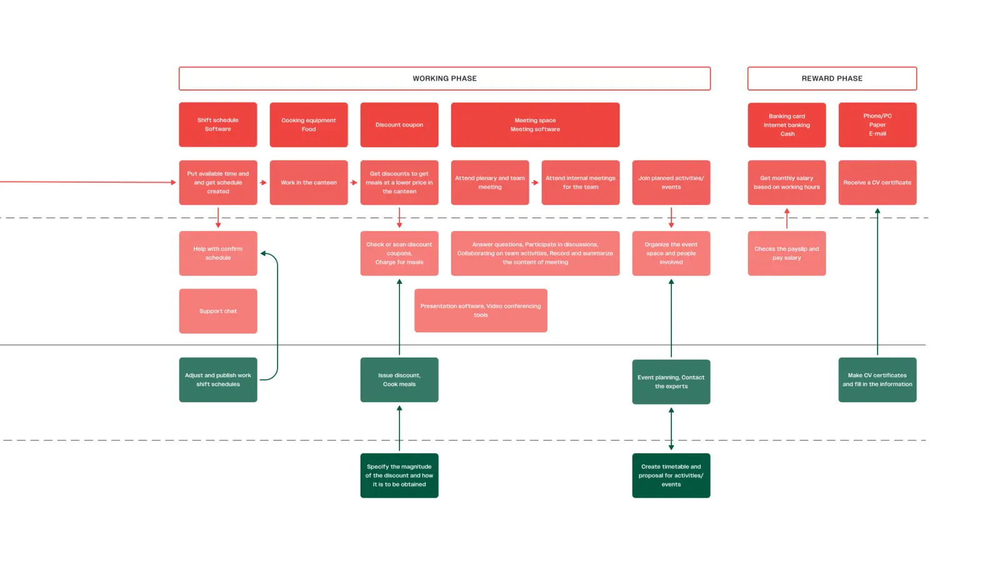

The project started by exploring students' eating habits, perceptions of plant-based diets and expectations towards university dining services. The research aimed to identify opportunities for creating a more sustainable and engaging food experience.
Two collaborative workshops were organised with Politecnico students from different academic backgrounds and dietary habits to co-create the future service and gather qualitative insights.
Insights gathered during research and workshops informed the design of a participatory service ecosystem, where students actively contribute to the operation of the canteen while developing practical skills and strengthening the campus community.
Nostra reimagines the university canteen as a collaborative space where food becomes a catalyst for sustainability, learning and social connection. Beyond providing affordable plant-based meals, the service encourages responsible consumption, shared ownership and a stronger sense of community across campus.






